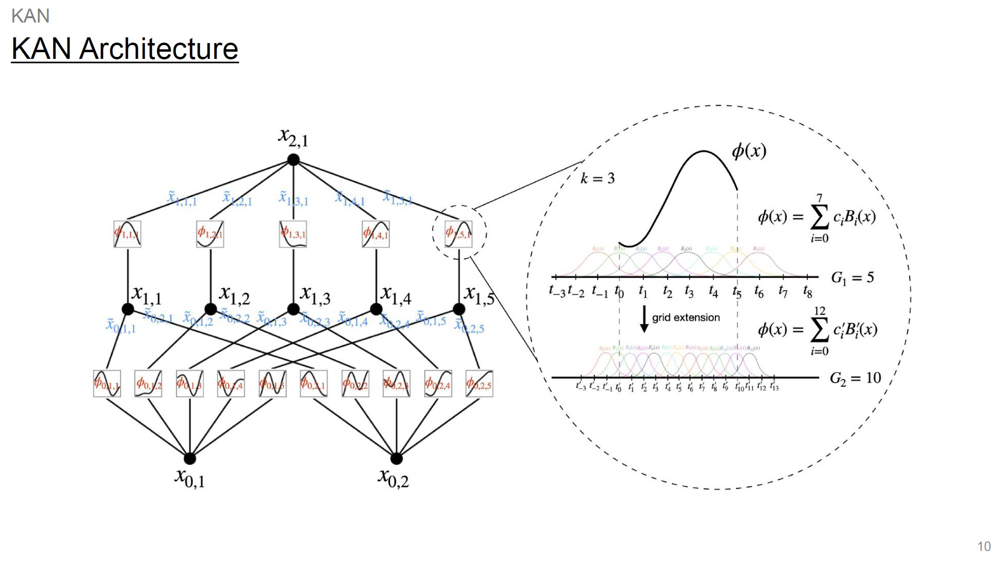
Open research notes
Talks
Selected presentation materials covering recommender systems, graph learning, multimodal models, language models, and explainable AI.
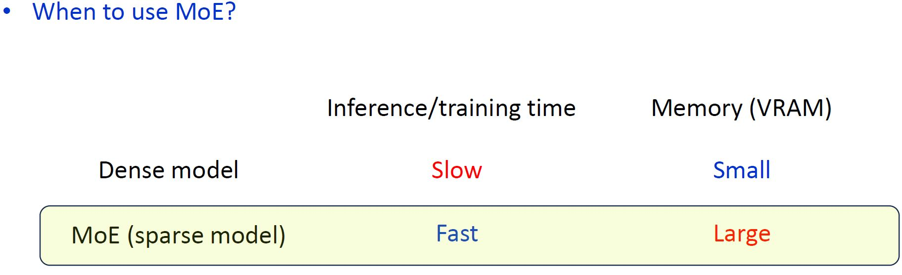
Mixture of Experts
Presentation file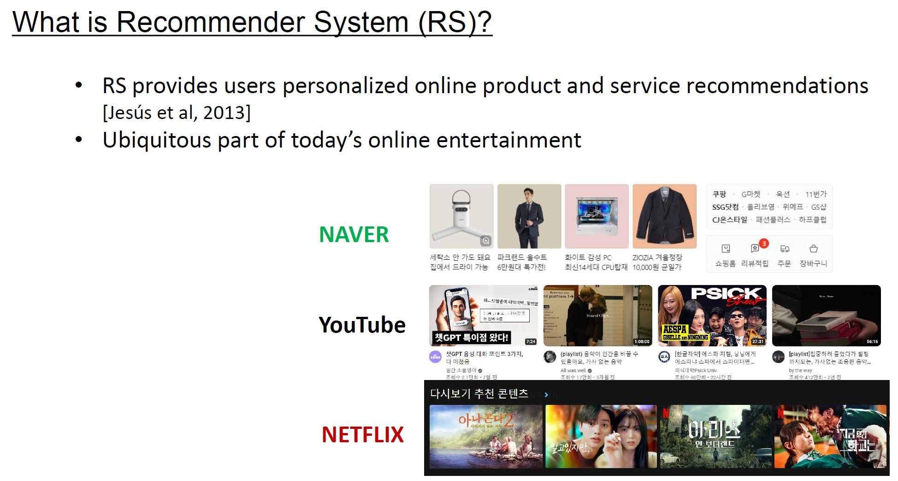
Graph Filtering for Collaborative Filtering
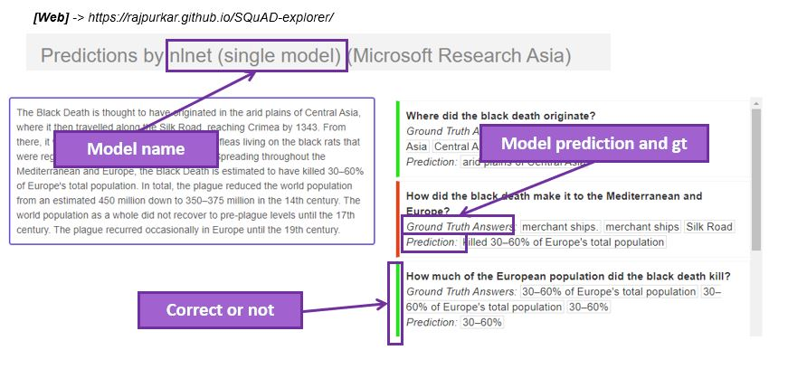
Question Answering
Presentation file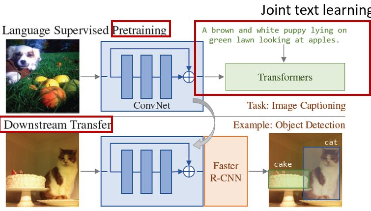
Joint Visual & Text Learning
Presentation file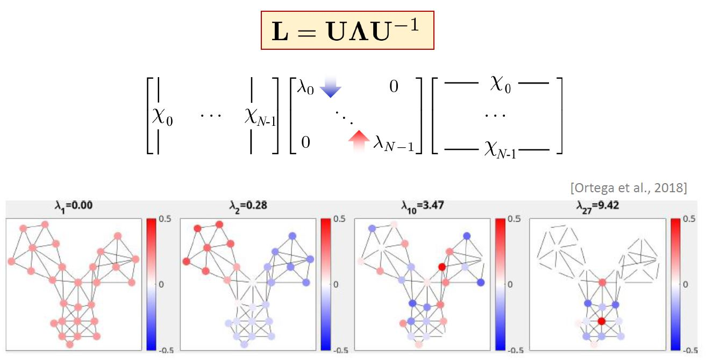
Graph Signal Processing & Filter Design
Presentation file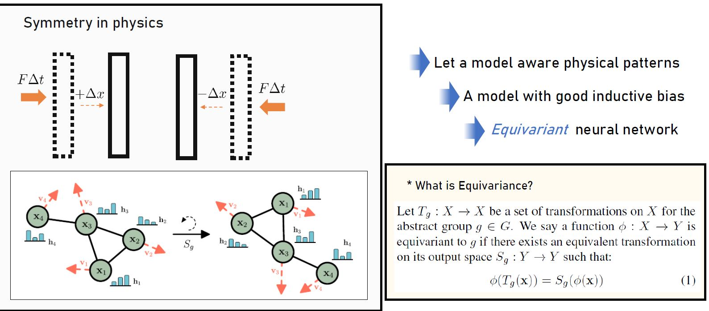
Physics-Informed Graph Neural Networks
Presentation file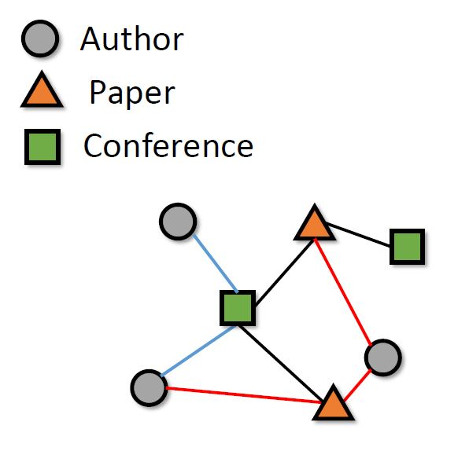
GNNs for Heterogeneous Graphs
Presentation file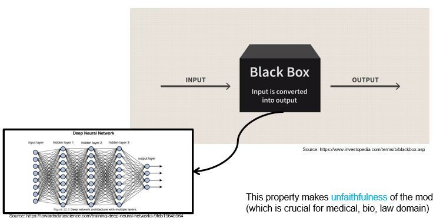
Toward Explainable AI
Presentation file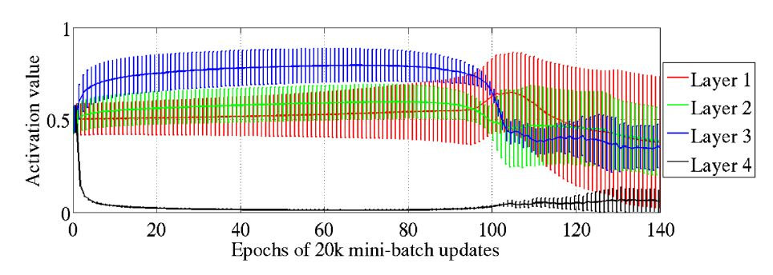
Neural Network Initialization
Presentation file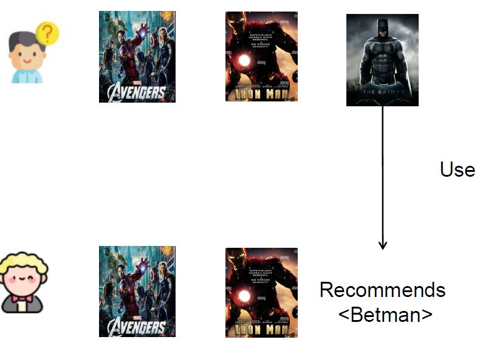